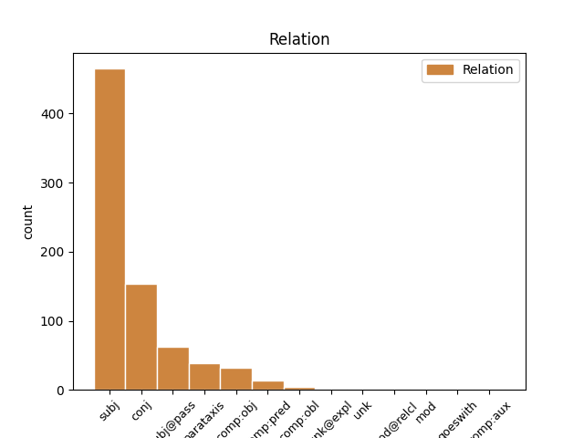
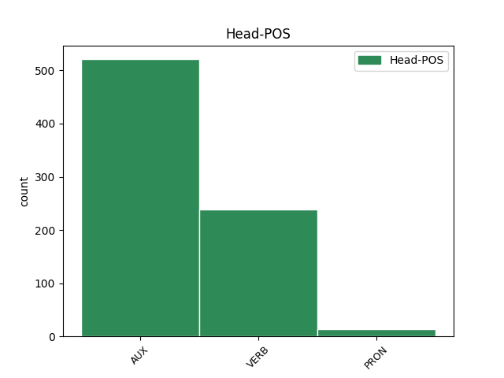
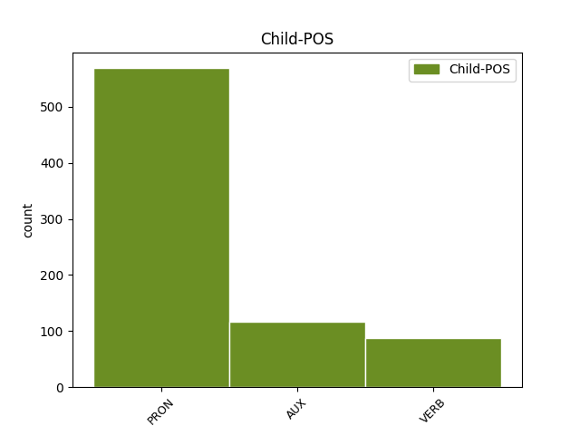

Distribution of features within this leaf



Agreement Rules sorted by frequency.
- When the dependent token is the subject(subj) of the head token, and the head token is AUX and the dependent token is PRON.
1 If _ _ _ _ 0 _ _ _
2 you _ _ _ _ 0 _ _ _
3 bought _ _ _ _ 0 _ _ _
4 packaged _ _ _ _ 0 _ _ _
5 quinoa _ _ _ _ 0 _ _ _
6 , _ _ _ _ 0 _ _ _
7 this _ _ _ _ 0 _ _ _
8 step _ _ _ _ 0 _ _ _
9 is _ _ _ _ 0 _ _ _
10 n't _ _ _ _ 0 _ _ _
11 always _ _ _ _ 0 _ _ _
12 necessary _ _ _ _ 0 _ _ _
13 , _ _ _ _ 0 _ _ _
14 but _ _ _ _ 0 _ _ _
15 it it PRON PRP Case=Nom|Gender=Neut|Number=Sing|Person=3|PronType=Prs 16 subj _ SpaceAfter=No
16 's be AUX VBZ Mood=Ind|Number=Sing|Person=3|Tense=Pres|VerbForm=Fin 0 _ _ _
17 better _ _ _ _ 0 _ _ _
18 to _ _ _ _ 0 _ _ _
19 be _ _ _ _ 0 _ _ _
20 safe _ _ _ _ 0 _ _ _
21 than _ _ _ _ 0 _ _ _
22 sorry _ _ _ _ 0 _ _ _
23 . _ _ _ _ 0 _ _ _
1 If _ _ _ _ 0 _ _ _
2 desired _ _ _ _ 0 _ _ _
3 , _ _ _ _ 0 _ _ _
4 the _ _ _ _ 0 _ _ _
5 snitch _ _ _ _ 0 _ _ _
6 is _ _ _ _ 0 _ _ _
7 able _ _ _ _ 0 _ _ _
8 to _ _ _ _ 0 _ _ _
9 do _ _ _ _ 0 _ _ _
10 whatever _ _ _ _ 0 _ _ _
11 he he PRON PRP Case=Nom|Gender=Masc|Number=Sing|Person=3|PronType=Prs 14 subj _ _
12 or _ _ _ _ 0 _ _ _
13 she _ _ _ _ 0 _ _ _
14 wants want VERB VBZ Mood=Ind|Number=Sing|Person=3|Tense=Pres|VerbForm=Fin 0 _ _ _
15 to _ _ _ _ 0 _ _ _
16 avoid _ _ _ _ 0 _ _ _
17 capture _ _ _ _ 0 _ _ _
18 . _ _ _ _ 0 _ _ _
1 It _ _ _ _ 0 _ _ _
2 's _ _ _ _ 0 _ _ _
3 a _ _ _ _ 0 _ _ _
4 completed _ _ _ _ 0 _ _ _
5 term _ _ _ _ 0 _ _ _
6 , _ _ _ _ 0 _ _ _
7 but _ _ _ _ 0 _ _ _
8 it it PRON PRP Case=Nom|Gender=Neut|Number=Sing|Person=3|PronType=Prs 9 subj@pass _ _
9 is be AUX VBZ Mood=Ind|Number=Sing|Person=3|Tense=Pres|VerbForm=Fin 0 _ _ _
10 supposed _ _ _ _ 0 _ _ _
11 to _ _ _ _ 0 _ _ _
12 come _ _ _ _ 0 _ _ _
13 from _ _ _ _ 0 _ _ _
14 ' _ _ _ _ 0 _ _ _
15 Flap _ _ _ _ 0 _ _ _
16 ! _ _ _ _ 0 _ _ _
17 ' _ _ _ _ 0 _ _ _
1 If _ _ _ _ 0 _ _ _
2 you _ _ _ _ 0 _ _ _
3 bought _ _ _ _ 0 _ _ _
4 packaged _ _ _ _ 0 _ _ _
5 quinoa _ _ _ _ 0 _ _ _
6 , _ _ _ _ 0 _ _ _
7 this _ _ _ _ 0 _ _ _
8 step _ _ _ _ 0 _ _ _
9 is be AUX VBZ Mood=Ind|Number=Sing|Person=3|Tense=Pres|VerbForm=Fin 0 _ _ _
10 n't _ _ _ _ 0 _ _ _
11 always _ _ _ _ 0 _ _ _
12 necessary _ _ _ _ 0 _ _ _
13 , _ _ _ _ 0 _ _ _
14 but _ _ _ _ 0 _ _ _
15 it _ _ _ _ 0 _ _ _
16 's be AUX VBZ Mood=Ind|Number=Sing|Person=3|Tense=Pres|VerbForm=Fin 9 conj _ _
17 better _ _ _ _ 0 _ _ _
18 to _ _ _ _ 0 _ _ _
19 be _ _ _ _ 0 _ _ _
20 safe _ _ _ _ 0 _ _ _
21 than _ _ _ _ 0 _ _ _
22 sorry _ _ _ _ 0 _ _ _
23 . _ _ _ _ 0 _ _ _
1 Simmer _ _ _ _ 0 _ _ _
2 the _ _ _ _ 0 _ _ _
3 quinoa _ _ _ _ 0 _ _ _
4 for _ _ _ _ 0 _ _ _
5 about _ _ _ _ 0 _ _ _
6 15 _ _ _ _ 0 _ _ _
7 minutes _ _ _ _ 0 _ _ _
8 or _ _ _ _ 0 _ _ _
9 until _ _ _ _ 0 _ _ _
10 the _ _ _ _ 0 _ _ _
11 grain _ _ _ _ 0 _ _ _
12 becomes become VERB VBZ Mood=Ind|Number=Sing|Person=3|Tense=Pres|VerbForm=Fin 0 _ _ _
13 translucent _ _ _ _ 0 _ _ _
14 and _ _ _ _ 0 _ _ _
15 the _ _ _ _ 0 _ _ _
16 white _ _ _ _ 0 _ _ _
17 germ _ _ _ _ 0 _ _ _
18 forms form VERB VBZ Mood=Ind|Number=Sing|Person=3|Tense=Pres|VerbForm=Fin 12 conj _ _
19 a _ _ _ _ 0 _ _ _
20 visible _ _ _ _ 0 _ _ _
21 spiral _ _ _ _ 0 _ _ _
22 on _ _ _ _ 0 _ _ _
23 the _ _ _ _ 0 _ _ _
24 exterior _ _ _ _ 0 _ _ _
25 of _ _ _ _ 0 _ _ _
26 the _ _ _ _ 0 _ _ _
27 quinoa _ _ _ _ 0 _ _ _
28 grain _ _ _ _ 0 _ _ _
29 . _ _ _ _ 0 _ _ _
1 The _ _ _ _ 0 _ _ _
2 object _ _ _ _ 0 _ _ _
3 of _ _ _ _ 0 _ _ _
4 the _ _ _ _ 0 _ _ _
5 game _ _ _ _ 0 _ _ _
6 is be AUX VBZ Mood=Ind|Number=Sing|Person=3|Tense=Pres|VerbForm=Fin 0 _ _ _
7 to _ _ _ _ 0 _ _ _
8 score _ _ _ _ 0 _ _ _
9 the _ _ _ _ 0 _ _ _
10 most _ _ _ _ 0 _ _ _
11 points _ _ _ _ 0 _ _ _
12 and _ _ _ _ 0 _ _ _
13 the _ _ _ _ 0 _ _ _
14 game _ _ _ _ 0 _ _ _
15 ends end VERB VBZ Mood=Ind|Number=Sing|Person=3|Tense=Pres|VerbForm=Fin 6 conj _ _
16 when _ _ _ _ 0 _ _ _
17 the _ _ _ _ 0 _ _ _
18 seeker _ _ _ _ 0 _ _ _
19 snatches _ _ _ _ 0 _ _ _
20 the _ _ _ _ 0 _ _ _
21 snitch _ _ _ _ 0 _ _ _
22 . _ _ _ _ 0 _ _ _
1 Some _ _ _ _ 0 _ _ _
2 of _ _ _ _ 0 _ _ _
3 this _ _ _ _ 0 _ _ _
4 stuff _ _ _ _ 0 _ _ _
5 is be AUX VBZ Mood=Ind|Number=Sing|Person=3|Tense=Pres|VerbForm=Fin 0 _ _ _
6 dangerous _ _ _ _ 0 _ _ _
7 -- _ _ _ _ 0 _ _ _
8 this _ _ _ _ 0 _ _ _
9 experiment _ _ _ _ 0 _ _ _
10 is be AUX VBZ Mood=Ind|Number=Sing|Person=3|Tense=Pres|VerbForm=Fin 5 parataxis _ _
11 not _ _ _ _ 0 _ _ _
12 meant _ _ _ _ 0 _ _ _
13 for _ _ _ _ 0 _ _ _
14 children _ _ _ _ 0 _ _ _
15 ! _ _ _ _ 0 _ _ _
1 However _ _ _ _ 0 _ _ _
2 , _ _ _ _ 0 _ _ _
3 if _ _ _ _ 0 _ _ _
4 somebody _ _ _ _ 0 _ _ _
5 looks look VERB VBZ Mood=Ind|Number=Sing|Person=3|Tense=Pres|VerbForm=Fin 0 _ _ _
6 seriously _ _ _ _ 0 _ _ _
7 alarmed _ _ _ _ 0 _ _ _
8 or _ _ _ _ 0 _ _ _
9 is be AUX VBZ Mood=Ind|Number=Sing|Person=3|Tense=Pres|VerbForm=Fin 5 conj _ _
10 starting _ _ _ _ 0 _ _ _
11 to _ _ _ _ 0 _ _ _
12 panic _ _ _ _ 0 _ _ _
13 , _ _ _ _ 0 _ _ _
14 let _ _ _ _ 0 _ _ _
15 them _ _ _ _ 0 _ _ _
16 know _ _ _ _ 0 _ _ _
17 that _ _ _ _ 0 _ _ _
18 you _ _ _ _ 0 _ _ _
19 were _ _ _ _ 0 _ _ _
20 not _ _ _ _ 0 _ _ _
21 being _ _ _ _ 0 _ _ _
22 serious _ _ _ _ 0 _ _ _
23 . _ _ _ _ 0 _ _ _
1 If _ _ _ _ 0 _ _ _
2 desired _ _ _ _ 0 _ _ _
3 , _ _ _ _ 0 _ _ _
4 the _ _ _ _ 0 _ _ _
5 snitch _ _ _ _ 0 _ _ _
6 is _ _ _ _ 0 _ _ _
7 able _ _ _ _ 0 _ _ _
8 to _ _ _ _ 0 _ _ _
9 do _ _ _ _ 0 _ _ _
10 whatever _ _ _ _ 0 _ _ _
11 he he PRON PRP Case=Nom|Gender=Masc|Number=Sing|Person=3|PronType=Prs 0 _ _ _
12 or _ _ _ _ 0 _ _ _
13 she she PRON PRP Case=Nom|Gender=Fem|Number=Sing|Person=3|PronType=Prs 11 conj _ _
14 wants _ _ _ _ 0 _ _ _
15 to _ _ _ _ 0 _ _ _
16 avoid _ _ _ _ 0 _ _ _
17 capture _ _ _ _ 0 _ _ _
18 . _ _ _ _ 0 _ _ _
1 The _ _ _ _ 0 _ _ _
2 Greek _ _ _ _ 0 _ _ _
3 Orthodox _ _ _ _ 0 _ _ _
4 Church _ _ _ _ 0 _ _ _
5 estimates estimate VERB VBZ Mood=Ind|Number=Sing|Person=3|Tense=Pres|VerbForm=Fin 0 _ _ _
6 that _ _ _ _ 0 _ _ _
7 number _ _ _ _ 0 _ _ _
8 is be AUX VBZ Mood=Ind|Number=Sing|Person=3|Tense=Pres|VerbForm=Fin 5 comp:obj _ _
9 closer _ _ _ _ 0 _ _ _
10 to _ _ _ _ 0 _ _ _
11 40,000 _ _ _ _ 0 _ _ _
12 . _ _ _ _ 0 _ _ _
1 Basil _ _ _ _ 0 _ _ _
2 needs need VERB VBZ Mood=Ind|Number=Sing|Person=3|Tense=Pres|VerbForm=Fin 0 _ _ _
3 warm _ _ _ _ 0 _ _ _
4 air _ _ _ _ 0 _ _ _
5 and _ _ _ _ 0 _ _ _
6 sun _ _ _ _ 0 _ _ _
7 to _ _ _ _ 0 _ _ _
8 do _ _ _ _ 0 _ _ _
9 well _ _ _ _ 0 _ _ _
10 , _ _ _ _ 0 _ _ _
11 so _ _ _ _ 0 _ _ _
12 it _ _ _ _ 0 _ _ _
13 's be AUX VBZ Mood=Ind|Number=Sing|Person=3|Tense=Pres|VerbForm=Fin 2 parataxis _ _
14 often _ _ _ _ 0 _ _ _
15 easiest _ _ _ _ 0 _ _ _
16 to _ _ _ _ 0 _ _ _
17 start _ _ _ _ 0 _ _ _
18 the _ _ _ _ 0 _ _ _
19 seeds _ _ _ _ 0 _ _ _
20 indoors _ _ _ _ 0 _ _ _
21 instead _ _ _ _ 0 _ _ _
22 of _ _ _ _ 0 _ _ _
23 risking _ _ _ _ 0 _ _ _
24 that _ _ _ _ 0 _ _ _
25 they _ _ _ _ 0 _ _ _
26 'll _ _ _ _ 0 _ _ _
27 get _ _ _ _ 0 _ _ _
28 damaged _ _ _ _ 0 _ _ _
29 by _ _ _ _ 0 _ _ _
30 frost _ _ _ _ 0 _ _ _
31 . _ _ _ _ 0 _ _ _
1 The _ _ _ _ 0 _ _ _
2 origin _ _ _ _ 0 _ _ _
3 of _ _ _ _ 0 _ _ _
4 the _ _ _ _ 0 _ _ _
5 city _ _ _ _ 0 _ _ _
6 's _ _ _ _ 0 _ _ _
7 name _ _ _ _ 0 _ _ _
8 is be AUX VBZ Mood=Ind|Number=Sing|Person=3|Tense=Pres|VerbForm=Fin 0 _ _ _
9 unknown _ _ _ _ 0 _ _ _
10 , _ _ _ _ 0 _ _ _
11 however _ _ _ _ 0 _ _ _
12 , _ _ _ _ 0 _ _ _
13 the _ _ _ _ 0 _ _ _
14 word _ _ _ _ 0 _ _ _
15 łódź _ _ _ _ 0 _ _ _
16 translates translate VERB VBZ Mood=Ind|Number=Sing|Person=3|Tense=Pres|VerbForm=Fin 8 parataxis _ _
17 to _ _ _ _ 0 _ _ _
18 " _ _ _ _ 0 _ _ _
19 boat _ _ _ _ 0 _ _ _
20 " _ _ _ _ 0 _ _ _
21 in _ _ _ _ 0 _ _ _
22 English _ _ _ _ 0 _ _ _
23 . _ _ _ _ 0 _ _ _
1 The _ _ _ _ 0 _ _ _
2 study _ _ _ _ 0 _ _ _
3 focuses focus VERB VBZ Mood=Ind|Number=Sing|Person=3|Tense=Pres|VerbForm=Fin 0 _ _ _
4 on _ _ _ _ 0 _ _ _
5 ozone-temperature _ _ _ _ 0 _ _ _
6 covariation _ _ _ _ 0 _ _ _
7 : _ _ _ _ 0 _ _ _
8 ground-level _ _ _ _ 0 _ _ _
9 ozone _ _ _ _ 0 _ _ _
10 increases increase VERB VBZ Mood=Ind|Number=Sing|Person=3|Tense=Pres|VerbForm=Fin 3 parataxis _ _
11 with _ _ _ _ 0 _ _ _
12 temperatures _ _ _ _ 0 _ _ _
13 . _ _ _ _ 0 _ _ _
1 It _ _ _ _ 0 _ _ _
2 ’s _ _ _ _ 0 _ _ _
3 this _ _ _ _ 0 _ _ _
4 quiet _ _ _ _ 0 _ _ _
5 experience _ _ _ _ 0 _ _ _
6 where _ _ _ _ 0 _ _ _
7 you _ _ _ _ 0 _ _ _
8 are _ _ _ _ 0 _ _ _
9 trying _ _ _ _ 0 _ _ _
10 to _ _ _ _ 0 _ _ _
11 soak _ _ _ _ 0 _ _ _
12 in _ _ _ _ 0 _ _ _
13 what _ _ _ _ 0 _ _ _
14 the _ _ _ _ 0 _ _ _
15 joke _ _ _ _ 0 _ _ _
16 is _ _ _ _ 0 _ _ _
17 , _ _ _ _ 0 _ _ _
18 have _ _ _ _ 0 _ _ _
19 we _ _ _ _ 0 _ _ _
20 done _ _ _ _ 0 _ _ _
21 anything _ _ _ _ 0 _ _ _
22 like _ _ _ _ 0 _ _ _
23 this _ _ _ _ 0 _ _ _
24 , _ _ _ _ 0 _ _ _
25 is be AUX VBZ Mood=Ind|Number=Sing|Person=3|Tense=Pres|VerbForm=Fin 0 _ _ _
26 it it PRON PRP Case=Nom|Gender=Neut|Number=Sing|Person=3|PronType=Prs 25 comp:pred _ _
27 a _ _ _ _ 0 _ _ _
28 unique _ _ _ _ 0 _ _ _
29 take _ _ _ _ 0 _ _ _
30 , _ _ _ _ 0 _ _ _
31 what _ _ _ _ 0 _ _ _
32 are _ _ _ _ 0 _ _ _
33 other _ _ _ _ 0 _ _ _
34 people _ _ _ _ 0 _ _ _
35 doing _ _ _ _ 0 _ _ _
36 . _ _ _ _ 0 _ _ _
1 this _ _ _ _ 0 _ _ _
2 is be AUX VBZ Mood=Ind|Number=Sing|Person=3|Tense=Pres|VerbForm=Fin 0 _ _ _
3 why _ _ _ _ 0 _ _ _
4 hooking _ _ _ _ 0 _ _ _
5 your _ _ _ _ 0 _ _ _
6 arms _ _ _ _ 0 _ _ _
7 through _ _ _ _ 0 _ _ _
8 the _ _ _ _ 0 _ _ _
9 harness _ _ _ _ 0 _ _ _
10 is be AUX VBZ Mood=Ind|Number=Sing|Person=3|Tense=Pres|VerbForm=Fin 2 comp:pred _ _
11 essential _ _ _ _ 0 _ _ _
12 . _ _ _ _ 0 _ _ _
1 Another _ _ _ _ 0 _ _ _
2 variation _ _ _ _ 0 _ _ _
3 is be AUX VBZ Mood=Ind|Number=Sing|Person=3|Tense=Pres|VerbForm=Fin 0 _ _ _
4 where _ _ _ _ 0 _ _ _
5 the _ _ _ _ 0 _ _ _
6 referee _ _ _ _ 0 _ _ _
7 places place VERB VBZ Mood=Ind|Number=Sing|Person=3|Tense=Pres|VerbForm=Fin 3 comp:pred _ _
8 the _ _ _ _ 0 _ _ _
9 snitch _ _ _ _ 0 _ _ _
10 somewhere _ _ _ _ 0 _ _ _
11 in _ _ _ _ 0 _ _ _
12 the _ _ _ _ 0 _ _ _
13 field _ _ _ _ 0 _ _ _
14 ( _ _ _ _ 0 _ _ _
15 in _ _ _ _ 0 _ _ _
16 this _ _ _ _ 0 _ _ _
17 case _ _ _ _ 0 _ _ _
18 it _ _ _ _ 0 _ _ _
19 's _ _ _ _ 0 _ _ _
20 a _ _ _ _ 0 _ _ _
21 small _ _ _ _ 0 _ _ _
22 ball _ _ _ _ 0 _ _ _
23 ) _ _ _ _ 0 _ _ _
24 . _ _ _ _ 0 _ _ _
1 That _ _ _ _ 0 _ _ _
2 makes make VERB VBZ Mood=Ind|Number=Sing|Person=3|Tense=Pres|VerbForm=Fin 0 _ _ _
3 it it PRON PRP Case=Acc|Gender=Neut|Number=Sing|Person=3|PronType=Prs 2 comp:obj _ _
4 much _ _ _ _ 0 _ _ _
5 easier _ _ _ _ 0 _ _ _
6 to _ _ _ _ 0 _ _ _
7 find _ _ _ _ 0 _ _ _
8 places _ _ _ _ 0 _ _ _
9 than _ _ _ _ 0 _ _ _
10 in _ _ _ _ 0 _ _ _
11 cities _ _ _ _ 0 _ _ _
12 where _ _ _ _ 0 _ _ _
13 streets _ _ _ _ 0 _ _ _
14 go _ _ _ _ 0 _ _ _
15 every _ _ _ _ 0 _ _ _
16 which _ _ _ _ 0 _ _ _
17 way _ _ _ _ 0 _ _ _
18 . _ _ _ _ 0 _ _ _
1 It it PRON PRP Case=Nom|Gender=Neut|Number=Sing|Person=3|PronType=Prs 2 unk@expl _ _
2 was be AUX VBD Mood=Ind|Number=Sing|Person=3|Tense=Past|VerbForm=Fin 0 _ _ _
3 not _ _ _ _ 0 _ _ _
4 until _ _ _ _ 0 _ _ _
5 about _ _ _ _ 0 _ _ _
6 170 _ _ _ _ 0 _ _ _
7 years _ _ _ _ 0 _ _ _
8 later _ _ _ _ 0 _ _ _
9 , _ _ _ _ 0 _ _ _
10 in _ _ _ _ 0 _ _ _
11 1896 _ _ _ _ 0 _ _ _
12 that _ _ _ _ 0 _ _ _
13 an _ _ _ _ 0 _ _ _
14 Italian _ _ _ _ 0 _ _ _
15 doctor _ _ _ _ 0 _ _ _
16 discovered _ _ _ _ 0 _ _ _
17 a _ _ _ _ 0 _ _ _
18 less _ _ _ _ 0 _ _ _
19 painful _ _ _ _ 0 _ _ _
20 method _ _ _ _ 0 _ _ _
21 which _ _ _ _ 0 _ _ _
22 is _ _ _ _ 0 _ _ _
23 still _ _ _ _ 0 _ _ _
24 in _ _ _ _ 0 _ _ _
25 use _ _ _ _ 0 _ _ _
26 today _ _ _ _ 0 _ _ _
27 . _ _ _ _ 0 _ _ _
1 There _ _ _ _ 0 _ _ _
2 is be VERB VBZ Mood=Ind|Number=Sing|Person=3|Tense=Pres|VerbForm=Fin 12 comp:obj _ _
3 so _ _ _ _ 0 _ _ _
4 much _ _ _ _ 0 _ _ _
5 beauty _ _ _ _ 0 _ _ _
6 all _ _ _ _ 0 _ _ _
7 around _ _ _ _ 0 _ _ _
8 the _ _ _ _ 0 _ _ _
9 island _ _ _ _ 0 _ _ _
10 , _ _ _ _ 0 _ _ _
11 it _ _ _ _ 0 _ _ _
12 is be VERB VBZ Mood=Ind|Number=Sing|Person=3|Tense=Pres|VerbForm=Fin 0 _ _ _
13 difficult _ _ _ _ 0 _ _ _
14 not _ _ _ _ 0 _ _ _
15 the _ _ _ _ 0 _ _ _
16 appreciate _ _ _ _ 0 _ _ _
17 to _ _ _ _ 0 _ _ _
18 magnificent _ _ _ _ 0 _ _ _
19 scenery _ _ _ _ 0 _ _ _
20 and _ _ _ _ 0 _ _ _
21 wildlife _ _ _ _ 0 _ _ _
22 . _ _ _ _ 0 _ _ _
1 This _ _ _ _ 0 _ _ _
2 system _ _ _ _ 0 _ _ _
3 can _ _ _ _ 0 _ _ _
4 also _ _ _ _ 0 _ _ _
5 be _ _ _ _ 0 _ _ _
6 used _ _ _ _ 0 _ _ _
7 longitudinally _ _ _ _ 0 _ _ _
8 to _ _ _ _ 0 _ _ _
9 study _ _ _ _ 0 _ _ _
10 how _ _ _ _ 0 _ _ _
11 the _ _ _ _ 0 _ _ _
12 workforce _ _ _ _ 0 _ _ _
13 ’s _ _ _ _ 0 _ _ _
14 composition _ _ _ _ 0 _ _ _
15 changes change VERB VBZ Mood=Ind|Number=Sing|Person=3|Tense=Pres|VerbForm=Fin 0 _ _ _
16 over _ _ _ _ 0 _ _ _
17 time _ _ _ _ 0 _ _ _
18 , _ _ _ _ 0 _ _ _
19 which _ _ _ _ 0 _ _ _
20 is be AUX VBZ Mood=Ind|Number=Sing|Person=3|Tense=Pres|VerbForm=Fin 15 mod@relcl _ _
21 particularly _ _ _ _ 0 _ _ _
22 valuable _ _ _ _ 0 _ _ _
23 for _ _ _ _ 0 _ _ _
24 evaluating _ _ _ _ 0 _ _ _
25 the _ _ _ _ 0 _ _ _
26 effectiveness _ _ _ _ 0 _ _ _
27 of _ _ _ _ 0 _ _ _
28 policies _ _ _ _ 0 _ _ _
29 meant _ _ _ _ 0 _ _ _
30 to _ _ _ _ 0 _ _ _
31 broaden _ _ _ _ 0 _ _ _
32 participation _ _ _ _ 0 _ _ _
33 or _ _ _ _ 0 _ _ _
34 improve _ _ _ _ 0 _ _ _
35 retention _ _ _ _ 0 _ _ _
36 of _ _ _ _ 0 _ _ _
37 faculty _ _ _ _ 0 _ _ _
38 . _ _ _ _ 0 _ _ _
1 Unfortunately _ _ _ _ 0 _ _ _
2 , _ _ _ _ 0 _ _ _
3 most _ _ _ _ 0 _ _ _
4 of _ _ _ _ 0 _ _ _
5 the _ _ _ _ 0 _ _ _
6 time _ _ _ _ 0 _ _ _
7 , _ _ _ _ 0 _ _ _
8 people _ _ _ _ 0 _ _ _
9 in _ _ _ _ 0 _ _ _
10 the _ _ _ _ 0 _ _ _
11 residential _ _ _ _ 0 _ _ _
12 end _ _ _ _ 0 _ _ _
13 up _ _ _ _ 0 _ _ _
14 choosing _ _ _ _ 0 _ _ _
15 a _ _ _ _ 0 _ _ _
16 lamp _ _ _ _ 0 _ _ _
17 based _ _ _ _ 0 _ _ _
18 on _ _ _ _ 0 _ _ _
19 it it PRON PRP Case=Nom|Gender=Neut|Number=Sing|Person=3|PronType=Prs 0 _ _ _
20 is be VERB VBZ Mood=Ind|Number=Sing|Person=3|Tense=Pres|VerbForm=Fin 19 goeswith _ Typo=Yes
21 price _ _ _ _ 0 _ _ _
22 rather _ _ _ _ 0 _ _ _
23 than _ _ _ _ 0 _ _ _
24 its _ _ _ _ 0 _ _ _
25 efficiency _ _ _ _ 0 _ _ _
26 and _ _ _ _ 0 _ _ _
27 this _ _ _ _ 0 _ _ _
28 cause _ _ _ _ 0 _ _ _
29 us _ _ _ _ 0 _ _ _
30 to _ _ _ _ 0 _ _ _
31 pay _ _ _ _ 0 _ _ _
32 for _ _ _ _ 0 _ _ _
33 our _ _ _ _ 0 _ _ _
34 lighting _ _ _ _ 0 _ _ _
35 more _ _ _ _ 0 _ _ _
36 than _ _ _ _ 0 _ _ _
37 necessary _ _ _ _ 0 _ _ _
38 . _ _ _ _ 0 _ _ _
1 What _ _ _ _ 0 _ _ _
2 is be AUX VBZ Mood=Ind|Number=Sing|Person=3|Tense=Pres|VerbForm=Fin 4 subj _ _
3 known _ _ _ _ 0 _ _ _
4 is be AUX VBZ Mood=Ind|Number=Sing|Person=3|Tense=Pres|VerbForm=Fin 0 _ _ _
5 that _ _ _ _ 0 _ _ _
6 five _ _ _ _ 0 _ _ _
7 days _ _ _ _ 0 _ _ _
8 before _ _ _ _ 0 _ _ _
9 his _ _ _ _ 0 _ _ _
10 death _ _ _ _ 0 _ _ _
11 , _ _ _ _ 0 _ _ _
12 he _ _ _ _ 0 _ _ _
13 wrote _ _ _ _ 0 _ _ _
14 a _ _ _ _ 0 _ _ _
15 letter _ _ _ _ 0 _ _ _
16 to _ _ _ _ 0 _ _ _
17 Chevalier _ _ _ _ 0 _ _ _
18 which _ _ _ _ 0 _ _ _
19 clearly _ _ _ _ 0 _ _ _
20 alludes _ _ _ _ 0 _ _ _
21 to _ _ _ _ 0 _ _ _
22 a _ _ _ _ 0 _ _ _
23 broken _ _ _ _ 0 _ _ _
24 love _ _ _ _ 0 _ _ _
25 affair _ _ _ _ 0 _ _ _
26 . _ _ _ _ 0 _ _ _
27 [ _ _ _ _ 0 _ _ _
28 7 _ _ _ _ 0 _ _ _
29 ] _ _ _ _ 0 _ _ _
1 It _ _ _ _ 0 _ _ _
2 ’s be VERB VBZ Mood=Ind|Number=Sing|Person=3|Tense=Pres|VerbForm=Fin 26 comp:obj _ _
3 this _ _ _ _ 0 _ _ _
4 quiet _ _ _ _ 0 _ _ _
5 experience _ _ _ _ 0 _ _ _
6 where _ _ _ _ 0 _ _ _
7 you _ _ _ _ 0 _ _ _
8 are _ _ _ _ 0 _ _ _
9 trying _ _ _ _ 0 _ _ _
10 to _ _ _ _ 0 _ _ _
11 soak _ _ _ _ 0 _ _ _
12 in _ _ _ _ 0 _ _ _
13 what _ _ _ _ 0 _ _ _
14 the _ _ _ _ 0 _ _ _
15 joke _ _ _ _ 0 _ _ _
16 is _ _ _ _ 0 _ _ _
17 , _ _ _ _ 0 _ _ _
18 have _ _ _ _ 0 _ _ _
19 we _ _ _ _ 0 _ _ _
20 done _ _ _ _ 0 _ _ _
21 anything _ _ _ _ 0 _ _ _
22 like _ _ _ _ 0 _ _ _
23 this _ _ _ _ 0 _ _ _
24 , _ _ _ _ 0 _ _ _
25 is _ _ _ _ 0 _ _ _
26 it it PRON PRP Case=Nom|Gender=Neut|Number=Sing|Person=3|PronType=Prs 0 _ _ _
27 a _ _ _ _ 0 _ _ _
28 unique _ _ _ _ 0 _ _ _
29 take _ _ _ _ 0 _ _ _
30 , _ _ _ _ 0 _ _ _
31 what _ _ _ _ 0 _ _ _
32 are _ _ _ _ 0 _ _ _
33 other _ _ _ _ 0 _ _ _
34 people _ _ _ _ 0 _ _ _
35 doing _ _ _ _ 0 _ _ _
36 . _ _ _ _ 0 _ _ _
1 The _ _ _ _ 0 _ _ _
2 U.S. _ _ _ _ 0 _ _ _
3 Department _ _ _ _ 0 _ _ _
4 of _ _ _ _ 0 _ _ _
5 Agriculture _ _ _ _ 0 _ _ _
6 notes note VERB VBZ Mood=Ind|Number=Sing|Person=3|Tense=Pres|VerbForm=Fin 0 _ _ _
7 , _ _ _ _ 0 _ _ _
8 " _ _ _ _ 0 _ _ _
9 Ground-level _ _ _ _ 0 _ _ _
10 ozone _ _ _ _ 0 _ _ _
11 causes cause VERB VBZ Mood=Ind|Number=Sing|Person=3|Tense=Pres|VerbForm=Fin 6 unk _ _
12 more _ _ _ _ 0 _ _ _
13 damage _ _ _ _ 0 _ _ _
14 to _ _ _ _ 0 _ _ _
15 plants _ _ _ _ 0 _ _ _
16 than _ _ _ _ 0 _ _ _
17 all _ _ _ _ 0 _ _ _
18 other _ _ _ _ 0 _ _ _
19 air _ _ _ _ 0 _ _ _
20 pollutants _ _ _ _ 0 _ _ _
21 combined _ _ _ _ 0 _ _ _
22 " _ _ _ _ 0 _ _ _
23 , _ _ _ _ 0 _ _ _
24 highlighting _ _ _ _ 0 _ _ _
25 the _ _ _ _ 0 _ _ _
26 importance _ _ _ _ 0 _ _ _
27 of _ _ _ _ 0 _ _ _
28 air _ _ _ _ 0 _ _ _
29 quality _ _ _ _ 0 _ _ _
30 for _ _ _ _ 0 _ _ _
31 agriculture _ _ _ _ 0 _ _ _
32 . _ _ _ _ 0 _ _ _
1 Although _ _ _ _ 0 _ _ _
2 flying _ _ _ _ 0 _ _ _
3 to _ _ _ _ 0 _ _ _
4 the _ _ _ _ 0 _ _ _
5 Chathams _ _ _ _ 0 _ _ _
6 and _ _ _ _ 0 _ _ _
7 back _ _ _ _ 0 _ _ _
8 is be AUX VBZ Mood=Ind|Number=Sing|Person=3|Tense=Pres|VerbForm=Fin 13 mod _ _
9 not _ _ _ _ 0 _ _ _
10 cheap _ _ _ _ 0 _ _ _
11 , _ _ _ _ 0 _ _ _
12 it _ _ _ _ 0 _ _ _
13 is be AUX VBZ Mood=Ind|Number=Sing|Person=3|Tense=Pres|VerbForm=Fin 0 _ _ _
14 worth _ _ _ _ 0 _ _ _
15 it _ _ _ _ 0 _ _ _
16 . _ _ _ _ 0 _ _ _
1 Another _ _ _ _ 0 _ _ _
2 thing _ _ _ _ 0 _ _ _
3 non-locals _ _ _ _ 0 _ _ _
4 do _ _ _ _ 0 _ _ _
5 n't _ _ _ _ 0 _ _ _
6 often _ _ _ _ 0 _ _ _
7 realize _ _ _ _ 0 _ _ _
8 is be AUX VBZ Mood=Ind|Number=Sing|Person=3|Tense=Pres|VerbForm=Fin 17 comp:aux _ _
9 that _ _ _ _ 0 _ _ _
10 Cleveland _ _ _ _ 0 _ _ _
11 's _ _ _ _ 0 _ _ _
12 long _ _ _ _ 0 _ _ _
13 history _ _ _ _ 0 _ _ _
14 of _ _ _ _ 0 _ _ _
15 industrial _ _ _ _ 0 _ _ _
16 wealth _ _ _ _ 0 _ _ _
17 has have AUX VBZ Mood=Ind|Number=Sing|Person=3|Tense=Pres|VerbForm=Fin 0 _ _ _
18 left _ _ _ _ 0 _ _ _
19 it _ _ _ _ 0 _ _ _
20 chock _ _ _ _ 0 _ _ _
21 full _ _ _ _ 0 _ _ _
22 of _ _ _ _ 0 _ _ _
23 cultural _ _ _ _ 0 _ _ _
24 riches _ _ _ _ 0 _ _ _
25 as _ _ _ _ 0 _ _ _
26 well _ _ _ _ 0 _ _ _
27 as _ _ _ _ 0 _ _ _
28 the _ _ _ _ 0 _ _ _
29 beginnings _ _ _ _ 0 _ _ _
30 of _ _ _ _ 0 _ _ _
31 a _ _ _ _ 0 _ _ _
32 " _ _ _ _ 0 _ _ _
33 sustainable _ _ _ _ 0 _ _ _
34 city _ _ _ _ 0 _ _ _
35 " _ _ _ _ 0 _ _ _
36 movement _ _ _ _ 0 _ _ _
37 . _ _ _ _ 0 _ _ _
Disagree Examples:
1 Reflection _ _ _ _ 0 _ _ _
2 allows allow VERB VBZ Mood=Ind|Number=Sing|Person=3|Tense=Pres|VerbForm=Fin 0 _ _ _
3 us us PRON PRP Case=Acc|Number=Plur|Person=1|PronType=Prs 2 comp:obj _ _
4 to _ _ _ _ 0 _ _ _
5 obtain _ _ _ _ 0 _ _ _
6 the _ _ _ _ 0 _ _ _
7 list _ _ _ _ 0 _ _ _
8 of _ _ _ _ 0 _ _ _
9 classes _ _ _ _ 0 _ _ _
10 and _ _ _ _ 0 _ _ _
11 methods _ _ _ _ 0 _ _ _
12 of _ _ _ _ 0 _ _ _
13 the _ _ _ _ 0 _ _ _
14 SUT _ _ _ _ 0 _ _ _
15 , _ _ _ _ 0 _ _ _
16 so _ _ _ _ 0 _ _ _
17 the _ _ _ _ 0 _ _ _
18 user _ _ _ _ 0 _ _ _
19 can _ _ _ _ 0 _ _ _
20 decide _ _ _ _ 0 _ _ _
21 the _ _ _ _ 0 _ _ _
22 methods _ _ _ _ 0 _ _ _
23 to _ _ _ _ 0 _ _ _
24 wish _ _ _ _ 0 _ _ _
25 the _ _ _ _ 0 _ _ _
26 operators _ _ _ _ 0 _ _ _
27 will _ _ _ _ 0 _ _ _
28 be _ _ _ _ 0 _ _ _
29 applied _ _ _ _ 0 _ _ _
30 . _ _ _ _ 0 _ _ _
1 She _ _ _ _ 0 _ _ _
2 wails _ _ _ _ 0 _ _ _
3 , _ _ _ _ 0 _ _ _
4 but _ _ _ _ 0 _ _ _
5 lets let VERB VBZ Mood=Ind|Number=Sing|Person=3|Tense=Pres|VerbForm=Fin 0 _ _ _
6 me I PRON PRP Case=Acc|Number=Sing|Person=1|PronType=Prs 5 comp:obj _ _
7 disentangle _ _ _ _ 0 _ _ _
8 her _ _ _ _ 0 _ _ _
9 hands _ _ _ _ 0 _ _ _
10 . _ _ _ _ 0 _ _ _
1 Cara _ _ _ _ 0 _ _ _
2 has _ _ _ _ 0 _ _ _
3 chocolate _ _ _ _ 0 _ _ _
4 smeared _ _ _ _ 0 _ _ _
5 on _ _ _ _ 0 _ _ _
6 her _ _ _ _ 0 _ _ _
7 mouth _ _ _ _ 0 _ _ _
8 , _ _ _ _ 0 _ _ _
9 but _ _ _ _ 0 _ _ _
10 she _ _ _ _ 0 _ _ _
11 lets let VERB VBZ Mood=Ind|Number=Sing|Person=3|Tense=Pres|VerbForm=Fin 0 _ _ _
12 me I PRON PRP Case=Acc|Number=Sing|Person=1|PronType=Prs 11 comp:obj _ _
13 wipe _ _ _ _ 0 _ _ _
14 her _ _ _ _ 0 _ _ _
15 face _ _ _ _ 0 _ _ _
16 off _ _ _ _ 0 _ _ _
17 . _ _ _ _ 0 _ _ _
1 She _ _ _ _ 0 _ _ _
2 tries _ _ _ _ 0 _ _ _
3 to _ _ _ _ 0 _ _ _
4 sit _ _ _ _ 0 _ _ _
5 down _ _ _ _ 0 _ _ _
6 , _ _ _ _ 0 _ _ _
7 but _ _ _ _ 0 _ _ _
8 I _ _ _ _ 0 _ _ _
9 just _ _ _ _ 0 _ _ _
10 keep _ _ _ _ 0 _ _ _
11 on _ _ _ _ 0 _ _ _
12 tugging _ _ _ _ 0 _ _ _
13 and _ _ _ _ 0 _ _ _
14 she _ _ _ _ 0 _ _ _
15 follows follow VERB VBZ Mood=Ind|Number=Sing|Person=3|Tense=Pres|VerbForm=Fin 0 _ _ _
16 me I PRON PRP Case=Acc|Number=Sing|Person=1|PronType=Prs 15 comp:obj _ SpaceAfter=No
17 , _ _ _ _ 0 _ _ _
18 gulping _ _ _ _ 0 _ _ _
19 and _ _ _ _ 0 _ _ _
20 wailing _ _ _ _ 0 _ _ _
21 . _ _ _ _ 0 _ _ _
1 “ _ _ _ _ 0 _ _ _
2 What _ _ _ _ 0 _ _ _
3 did _ _ _ _ 0 _ _ _
4 you _ _ _ _ 0 _ _ _
5 do _ _ _ _ 0 _ _ _
6 ? _ _ _ _ 0 _ _ _
7 ” _ _ _ _ 0 _ _ _
8 my _ _ _ _ 0 _ _ _
9 mom _ _ _ _ 0 _ _ _
10 says _ _ _ _ 0 _ _ _
11 when _ _ _ _ 0 _ _ _
12 she _ _ _ _ 0 _ _ _
13 sees see VERB VBZ Mood=Ind|Number=Sing|Person=3|Tense=Pres|VerbForm=Fin 0 _ _ _
14 us we PRON PRP Case=Acc|Number=Plur|Person=1|PronType=Prs 13 comp:obj _ SpaceAfter=No
15 . _ _ _ _ 0 _ _ _